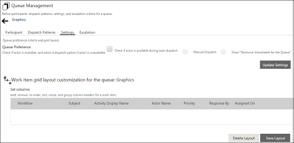

No
Click the Settings tab to open the corresponding view of the Queue Management window.
The following image shows the Settings tab of the Queue Management window:

This view has the Check if actor is available during auto dispatch. You can select this check box to set the queue control to first check for the availability of actors before an auto dispatch of tasks is done. If you enable this option, you will need to select one of the two follow-on actions to be performed if the actor is unavailable. You can enable manual dispatch of the task by selecting the Manual Dispatch button. Alternatively, you can have the control generate the action output "Resource Unavailable For Queue" by selecting the second button Show "Resource Unavailable for the Queue". Click Update Settings to save the new settings.
The WorkList Customization for Queues section enables you to customize the view of work items displayed in the queue folder. For more information about worklist customization, see Defining Layouts for Queues.